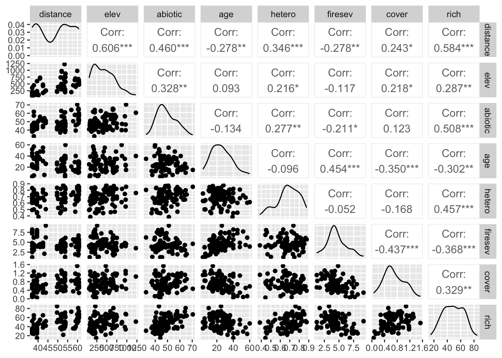
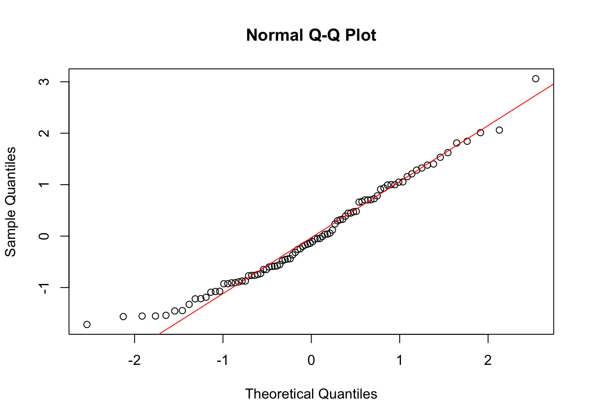
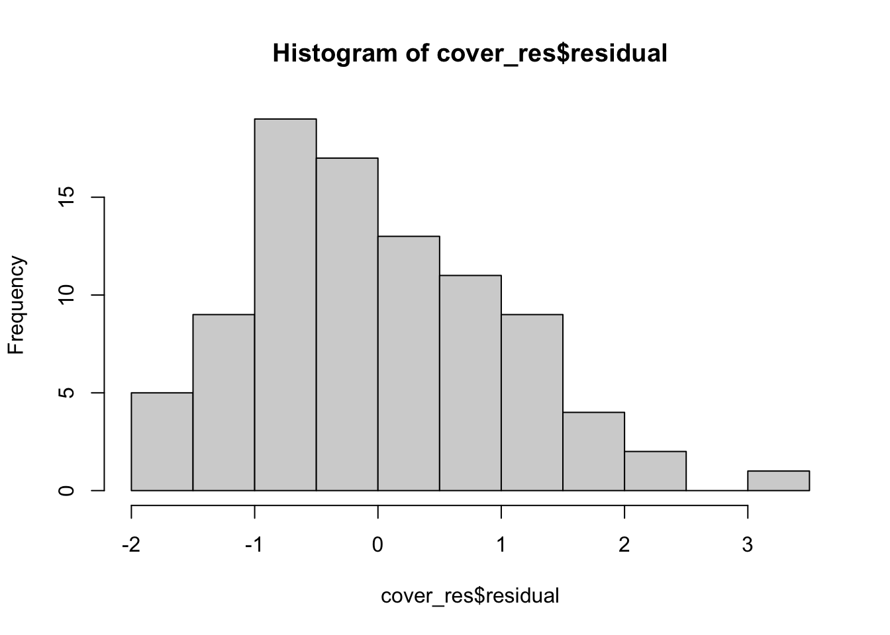
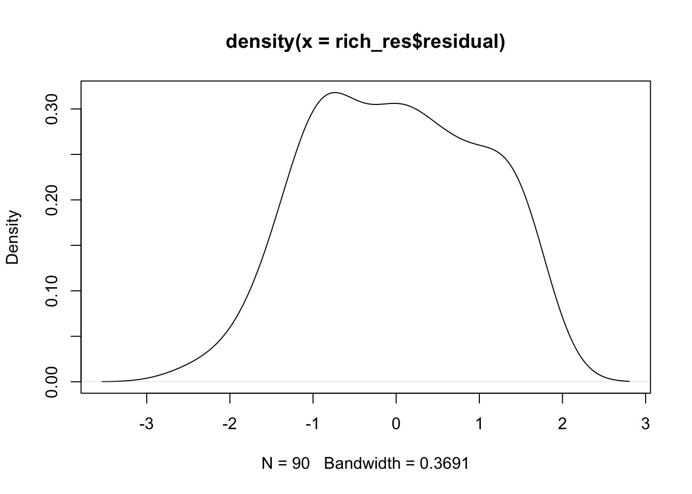
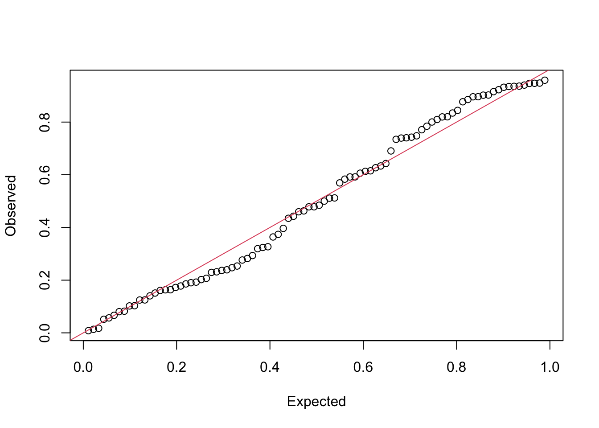
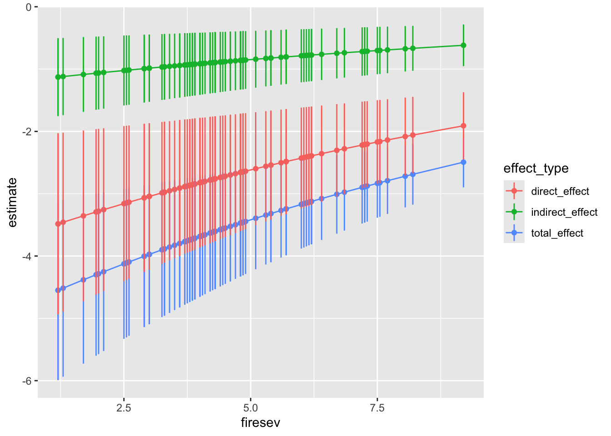
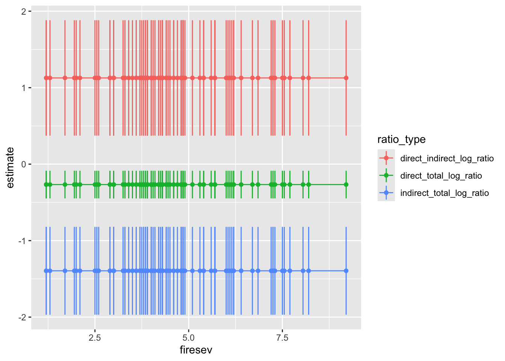

library(RTMB)
library(RTMBdist)
library(dplyr) # for playing with coefficient tables
library(ggplot2) # for viz
data("keeley", package = "piecewiseSEM")
GGally::ggpairs(keeley)
R, RTMB, SEM
OK. After thinking about Latent Variables the other day and hinting that I was going to get into SEM, lets, well, get into SEM! But with observed variables only at first so that we can demonstrate some simple concepts of how to work with SEM.
We’re going to use the classic Keeley dataset that Jim Grace uses in his book and I use a lot for teaching. It’s in the piecewiseSEM package by Jon Lefcheck which we’re kinda re-implementing in RTMB here.
Just as an aside, if you have things that are alreacy covered by piecewiseSEM, you might want to just use that, as it’s robust and stress-tested. And, as you’ll see, it automates many things that will be, shall we say, a pain in the butt for working with RTMB. So, buyer beware.
The Keeley data is great as it covered multiple variables regarding how fire severity in Southern Californian coastal hills and mountains. Check out this fun tutorial on using it in SEM.
Look at how many fun variables there are!
library(RTMB)
library(RTMBdist)
library(dplyr) # for playing with coefficient tables
library(ggplot2) # for viz
data("keeley", package = "piecewiseSEM")
GGally::ggpairs(keeley)
We’re gonig to start with a simple well-worn model looking at species richness.
Fire severity influences both plant cover and species richness, but cover also influences species richness. Let’s setup an RTMB objective function. In it, we’ll have to include every relationship. We’ll also build for the future and have it take in both data and parameters, and set it up so we can get new predictions. Let’s be robust from the start!
keeley_firesev_mod <- function(data, params){
# let's goooooooo!
getAll(data, params)
# What are we observing for later sims and predictions
rich <- OBS(rich)
cover_obs <- cover
cover <- OBS(cover)
# cover predictors
cover_sigma <- exp(log_cover_sigma)
cover_hat <- firesev_cover * firesev + cover_int
cover %~% dnorm(cover_hat, cover_sigma)
ADREPORT(cover_hat); ADREPORT(cover_sigma);
REPORT(cover_hat);
# predictors of richness
# GLM with a log link
log_rich_hat <- cover_rich * cover_obs + firesev_rich * firesev + rich_int
rich_hat <- exp(log_rich_hat) # inverse link function!
theta = exp(log_theta)
rich %~% dnbinom2(mu = rich_hat, size = theta)
# rich %~% dpois(rich_hat)
ADREPORT(rich_hat); REPORT(rich_hat)
}Notice I did one tricksy thing above - I made the effect on richness have a Negative Binomial error and log link. But, see how simple that was. Just like the glm notation! Note: I actually first wrote this with a poisson error, but, when I got to the quantile residual testing below, oopsies, that doesn’t work. I commented out the likelihood - try it yourself for funsies!
What should the parameters be here? Let’s try ones.
keeley_firesev_params <- list(
cover_rich = 1,
firesev_rich = 1,
rich_int = 1,
firesev_cover = 1,
cover_int = 1,
log_cover_sigma = log(sd(keeley$cover)),
log_theta = 1
)OK, let’ fit this wee beastie. Just like before, using nlminb().
cmb <- function(f, d) function(p) f(p, d)
# RTMB object
keeley_firesev_fit <- cmb(keeley_firesev_mod, keeley) |>
MakeADFun(keeley_firesev_params,
silent = TRUE)
#optimize
keeley_firesev_opt <- with(keeley_firesev_fit,
nlminb(par, fn, gr))
keeley_firesev_opt$message[1] "relative convergence (4)"Because we assigned cover and richness as observed variables, we can use oneStepPredict to get their residuals. Note, we’re using trace=FALSE just to make there be no output, and the methods we use for richness are due to its discrete non-gaussian distribution as a variable.
# Gaussian cover
cover_res <- oneStepPredict(keeley_firesev_fit, observation.name = "cover", method = "oneStepGaussian", trace = FALSE)
# NB richness
rich_res <- oneStepPredict(keeley_firesev_fit, observation.name = "rich", method = "oneStepGeneric", discrete = TRUE, trace = FALSE)This is great for cover -
qqnorm(cover_res$residual)
qqline(cover_res$residual, col = "red")
hist(cover_res$residual)
BUT - richness is negative binomial. So, no longer appropriate. Indeed, let’s look at the residual’s density
rich_res$residual |> density() |> plot()
RIGHT - we need quantile residuals. Which I showed how to do previously. As we might use this again, let’s write a function (which, maybe should be in the RTMB package or elsewhere…)
check_quantile_res <- function(obj, term, dat, nsim = 1e3){
sim_mat <- replicate(1e3, obj$simulate()[[term]])
qres <- DHARMa::getQuantile(sim_mat, dat[[term]])
gap::qqunif(qres, logscale = FALSE, col = "black")
}Where the above function gets simulations, then gets the quantiles of the observations versus the simulated values and plots then against a uniform distribution. And it works! You might have noticed I commented out a poisson above in the model - put it back in and try it out, you’ll see it DOES NOT work.
check_quantile_res(keeley_firesev_fit,
term = "rich",
dat = keeley)
By now, you should be feeling pretty comfortable. So, let’s see how well the coefficients match to what we get from fitting the two pieces separately:
sdreport(keeley_firesev_fit)sdreport(.) result
Estimate Std. Error
cover_rich 0.21582926 0.10859862
firesev_rich -0.05703019 0.02098951
rich_int 3.99899169 0.14693328
firesev_cover -0.08392560 0.01820157
cover_int 1.07435193 0.08830882
log_cover_sigma -1.25973278 0.07453549
log_theta 2.77631202 0.19997558
Maximum gradient component: 0.002736626 broom::tidy(MASS::glm.nb(rich ~ cover + firesev, data = keeley))# A tibble: 3 × 5
term estimate std.error statistic p.value
<chr> <dbl> <dbl> <dbl> <dbl>
1 (Intercept) 4.00 0.145 27.5 2.31e-166
2 cover 0.216 0.107 2.03 4.28e- 2
3 firesev -0.0570 0.0206 -2.76 5.71e- 3broom::tidy(lm(cover ~ firesev, data = keeley))# A tibble: 2 × 5
term estimate std.error statistic p.value
<chr> <dbl> <dbl> <dbl> <dbl>
1 (Intercept) 1.07 0.0893 12.0 2.79e-20
2 firesev -0.0839 0.0184 -4.56 1.65e- 5Lovely! Now on to the fun stuff… Because, frankly, if you can stare at a coefficient table and tell me what a model means or answer questions about hypotheses, I worry about how big your brain is. Mine is not! I need to DO things.
We now run into one of the more interesting questions of nonlinear SEM - what does it mean to calculate a direct or indirect effect. In linear SEMs, we can just multiple coefficients, or calculate standardized coefficients and multiply them - or just look at ’em. But it’s wonkier when we have a nonlinear effect. We need to See Coreria et al. 2025 for a great guide. I’m here drawing on (Pearl 2014)[https://pubmed.ncbi.nlm.nih.gov/24885338/] for calculations. The core of evaluation of, say, a 1 unit change is the following. Let’s decompose the effect of fire severity on richness going from fire severity = 0 to fire severity = 1 (a 1 unit change). The following will just look like coefficients if you have all linear relationships, but for nonlinear relationships, it will produce much more meaningful results.
Total Effect: Set fire severity = 0. Calculate cover. Then calculate richness based on fire severity and predicted cover. Repeat for fire severity = 1. Subtract one from the other. This is your total effect.
Direct effect: Set fire severity = 0. Calculate cover. Then calculate richness based on fire severity and predicted cover. Repeat for fire severity = 1, but, hold cover to the same value it was when fire severity = 0. Subtract one from the other. This is your direct effect.
Indirect effect: Set fire severity = 0. Calculate cover. Then calculate richness based on fire severity and predicted cover. Now, calculate cover for fire severity = 1. Now, with fire severity at 0 and cover at the value for fire severity = 1, calculate richness. Subtract one from the other. This is your indirect effect. If you want the summed indirect effect (lots of other mediators), you could also be sneaky and just subtract the direct effect from the total effect.
The other piece to think about - here I have all 1s and 0s. When you have a nonlinear relationship, where you start matters, and hence it is worthwhile to look at all three of these quantities at different base values for fire severity - not just 0! What are some good values? Using quantiles of the observed fire severities is not a bad way to go. Nor are min/median/max approaches. What matters most is your biological question for which you wish to assess total, direct, and indirect effects.
This is a lot of work to do from output. Fortunately, we can simply add these calculations into our model. Yes, we could go back and rewrite the whole model above. But let’s do something easier. Using some recent musing on splicing into a function, we can write this new TE/DE/ME bit into our model code and go from there.
add_to_end_of_function <- function(f, new_stuff, lines_back = 0){
s <- as.list(body(f))
n <- as.list(new_stuff)[-1]
body(f) <- as.call(c(s[1:(length(s)-lines_back)], n))
f
}OK, so, this function let’s us smoosh a function and some new lines together. Let’s now write up a block of code that could go into a RTMB objective function to do all of those calculations. We’ll calculate cover under the observed fire severity and fire severity + 1, then calculate all of the richness values with different combinations of fire severity and cover as outlined above. We will use those values to calculate the total, direct, and indirect effects and ADREPORT() those out.
Last, because these are nonlinear effects, we know that the effect size will vary across a gradient of fire severity (more on that soon). BUT - one thing we can do is look at the effect size of the direct versus indirect effects. The most straightforward way to do this would be ratios - but, nonadditivity and all that, so, let’s look at the log ratio of direct:total, indirect:total, and direct:indirect to get a sense of relative effect size. As all of this is negative and we’ll be using logs, we will have to write a little extra function for log(abs(x)), but that’s trivial.
calc_effects <- quote({
# cover with firesev is predicted already
cover_0 <- cover_hat
# cover with firesev + 1 - needed = cover_hat_firesev_plus_1
cover_1 <- firesev_cover * (firesev+1) + cover_int
# richness at firesev and cover = cover_hat
rich_00 <- exp(cover_rich * cover_0 +
firesev_rich * firesev + rich_int)
# richness at firesev and cover = cover_1
rich_11 <- exp(cover_rich * cover_1 +
firesev_rich * (firesev+1) + rich_int)
# richness at firesev = 1 and cover = cover_0
# for direct effect
rich_10 <- exp(cover_rich * cover_0 +
firesev_rich * (firesev+1) + rich_int)
# richness at firesev and cover = cover_1 for mediation
rich_01 <- exp(cover_rich * cover_1 +
firesev_rich * (firesev) + rich_int)
#Effects
total_effect <- rich_11 - rich_00
direct_effect <- rich_10 - rich_00
indirect_effect <- rich_01 - rich_00
ADREPORT(total_effect); ADREPORT(direct_effect)
ADREPORT(indirect_effect)
# log ratio of effects
logabs <- function(x) log(abs(x))
direct_total_log_ratio = logabs(direct_effect) - logabs(total_effect)
indirect_total_log_ratio = logabs(indirect_effect) - logabs(total_effect)
direct_indirect_log_ratio = logabs(direct_effect) - logabs(indirect_effect)
ADREPORT(direct_total_log_ratio)
ADREPORT(indirect_total_log_ratio)
ADREPORT(direct_indirect_log_ratio)
})WHEW! That’s a lot. Let’s make a new objective function with all of these calculation embedded in it.
# make a new objective function with calculations in it
keeley_mod_effects <- add_to_end_of_function(
keeley_firesev_mod,
calc_effects
)Time to get calculatin’. Now, we could go and make a data frame with a fire severity value of 0 and cover = 0, and then calculate all of this, BUT - because of the nonlinearity, let’s look at the effect sizes across a gradient of fire severity. Indeed, let’s look at the direct and indirect effect of fire severity across all observed fire severity values. We could do some gymnastics and get fixes parameters, etc., but, honestly, it’s easier just to refit this version of the model with our new effect calculations with our original data.
# RTMB object
keeley_effects_fit <- cmb(keeley_mod_effects, keeley) |>
MakeADFun(keeley_firesev_params,
silent = TRUE)
#optimize
keeley_effects_opt <- with(keeley_effects_fit,
nlminb(par, fn, gr))Oh, very nice. That was simple! To see the relative direct versus indirect effects, we can then visualize them all together based on estimates and SEs in sdreport().
effects_table <- sdreport(keeley_effects_fit) |>
summary(select = "report") |>
as_tibble(rownames = "effect_type") |>
filter(grepl("_effect", effect_type)) |>
janitor::clean_names() |>
mutate(firesev = rep(keeley$firesev, 3))
ggplot(effects_table,
aes(x = firesev, y = estimate,
ymin = estimate - std_error,
ymax = estimate + std_error,
color = effect_type)) +
geom_point() +
geom_line() +
geom_linerange()
Interesting! The effect is negative. You can see how the direct outweights the indirect. And, most interestingly, the effect size decreases as fire severity increases.
What about the log-ratios?
log_ratio_table <- sdreport(keeley_effects_fit) |>
summary(select = "report") |>
as_tibble(rownames = "ratio_type") |>
filter(grepl("_ratio", ratio_type)) |>
janitor::clean_names() |>
mutate(firesev = rep(keeley$firesev, 3))
ggplot(log_ratio_table,
aes(x = firesev, y = estimate,
ymin = estimate - std_error,
ymax = estimate + std_error,
color = ratio_type)) +
geom_point() +
geom_line() +
geom_linerange()
Oh - those are constant! Right, even though the absolute effect size changes with the nonlinearity, the relative ratio of effects to one another does not. This is SUPER useful information when quantifying the relative importance of each effect. So, we can take each of these, and then back-transform it to look at the ratios between effect sizes.
log_ratio_table |>
group_by(ratio_type) |>
slice(1L) |>
ungroup() |>
select(-firesev) |>
mutate(ratio = exp(estimate))# A tibble: 3 × 4
ratio_type estimate std_error ratio
<chr> <dbl> <dbl> <dbl>
1 direct_indirect_log_ratio 1.13 0.754 3.09
2 direct_total_log_ratio -0.267 0.180 0.766
3 indirect_total_log_ratio -1.39 0.574 0.248This is perhaps one of the useful things yet. The direct effect is 3x stronger than the indirect. Indeed, there is a roughly 75% : 25% direct to indirect breakdown in terms of contribution to the total effect. This is super useful particularly when talking about the relative magnitude of different pathways.
For practitioners of SEM, why should we do any of this? Well, if you have been using covariance-based SEM, with its assumptions of linearity and normality, and that’s good enough, don’t! Heck, lavaan even lets you have random intercepts now and has a few other tricks up its sleeve. So you might not need this. But….. you can see immediately how things like random slopes, truly multi-level SEMS might fit in very nicely here, even if gaussian and linear.
For those who are interested in more nonlinear/non-gaussian SEMS, up to this point, you have likely been using piecewiseSEM - again, you might not need all of this. Except…… you can code anything in an RTMB model. It’s far more flexible in terms of error distribution, and though you have to implement things by hand, if you can dream it, you can include it. So, while this is a harder road to take, you can do a lot more in terms of more flexible systems models.
I honestly thought I’d write one post on observed variable models and then go back to throw it all together for latents. But, I like that RTMB is fiddly enough that I’ve had to slow down here. Next up, I think I’ll cover assessing whole-model fit (a big goal in SEM) as that requires some rethinking of what you’re doing. Then a separate post on simulation and prediction, as it gets a wee bit trickier in terms of model structure, but, honestly, is kind of satisfying as the counterfactual world is your oyster. Then perhaps back to latents to bring it all together. I’ll ponder a good example for that if I can find one in the literature (or suggest your favorite below!)